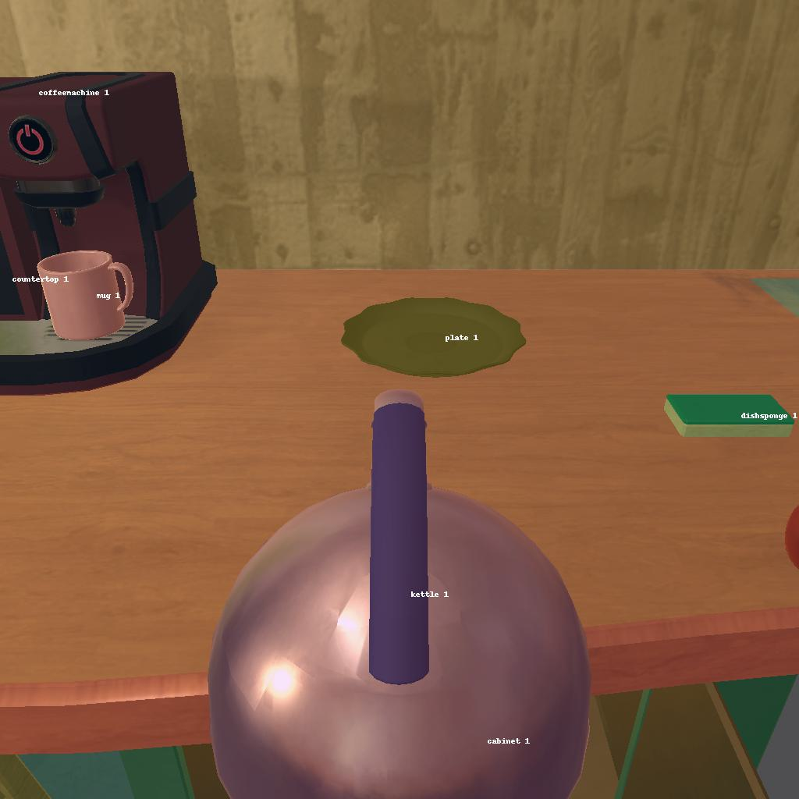

---------------------------------------------------------task: 26---------------------------------------------------------
--------------------------------------------------------------------------------------------------------------------------------------------------------------------
--------------------------------------------------------------------------------------------------------------------------------------------------------------------
Step:--------------------------------------------------------------------------14-------------------------------------------------------------------------------
----------------------------------------
VLM Prompt:
Image1:
Image2:
**Instruction**
1. Analyze the provided image to identify all visible household objects, focusing on those relevant to the task description "find two kettle and put them in cabinet."
2. Use the analysis of the image and the task hint "The agent must find an object of the desired type, pick it up, find the correct location to place it, put it down there, then look for another object of the desired type, pick it up, return to previous location, and put it down there with the other object." to answer the question: what is the most reasonable action in the choices for the task description "find two kettle and put them in cabinet"?
4. Decide and write the answer using the template: The answer is: (i): , where i is the real number. If there is no desired object in the image, search every place based on **Initial Observation** to find the object. And if no one is exactly correct, choose a similar answer.
**Initial Observation**
You are in the middle of a room. Looking quickly around you, you can see countertop (1), coffeemachine (1), cabinet (1-4), drawer (1-8), sink (1), sinkbasin (1), garbagecan (1), fridge (1), microwave (1), dresser (1), sidetable (1)
**Answer Choices**
(1): go to countertop 1
(2): go to coffeemachine 1
(3): go to cabinet 2
(4): go to drawer 1
(5): go to sink 1
(6): go to sinkbasin 1
(7): go to cabinet 3
(8): go to garbagecan 1
(9): go to cabinet 4
(10): go to drawer 2
(11): go to fridge 1
(12): go to microwave 1
(13): go to dresser 1
(14): go to sidetable 1
(15): go to drawer 3
(16): go to drawer 4
(17): go to drawer 5
(18): go to drawer 6
(19): go to drawer 7
(20): go to drawer 8
(21): open cabinet 1
(22): close cabinet 1
(23): put kettle 1 in/on cabinet 1
(24): examine cabinet 1
**Answer**
Let's think step by step by following the instructions.
----------------------------------------
----------------------------------------
Original Response:
Firstly, we need to identify all visible household objects related to the task. In both images, we can see there is a kettle labeled as "kettle 1" on the countertop.
Now, according to the task, we need to find two kettles and put them in a cabinet. We have already located one kettle, so the next step would be to find another kettle. However, there is no second kettle visible in the images provided. We need to search for it based on the Initial Observation.
The Initial Observation mentions several potential locations where a second kettle might be found, such as other cabinets, drawers, or on other appliances. We should start by searching the closest and most likely places where a second kettle might be stored, which would be in the cabinets or drawers.
Since we are already at cabinet 1 with the first kettle, it makes sense to check cabinet 1 first to see if the second kettle is there before moving on to other locations.
The most reasonable next action would be to open cabinet 1 to look for the second kettle. If it is not there, we can proceed to search other cabinets or drawers as mentioned in the Initial Observation.
Therefore, the answer is: (21): open cabinet 1.
----------------------------------------
----------------------------------------
>>> Refine Original VLM Response and Get Pure Action: No action
----------------------------------------
-----------------------------------------------------------------
Running time: 31.12632441520691 seconds
Total Money: 13.159040000000005
-----------------------------------------------------------------
-----------------------------------------------------------------
Text Observation:Nothing happens.
-----------------------------------------------------------------
UNSUCCEED